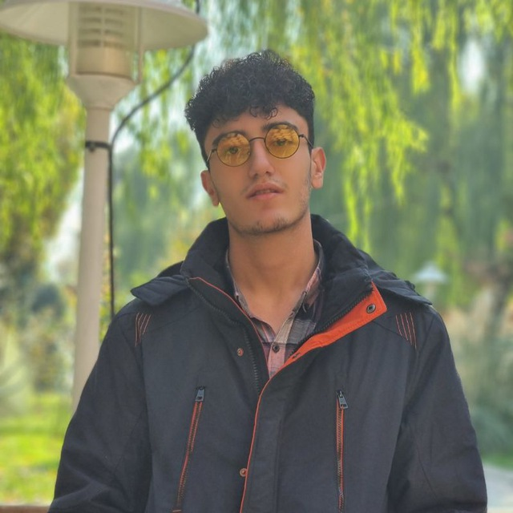

Machine learning across code (Software), language (NLP, LLMs), computational biology, and computational neuroscience.
Sina Beyrami — B.Sc. in Computer Engineering, Sharif University of Technology · GPA 18.49/20 · Tehran, Iran
Applies ML, DL, and NLP wherever a hidden structure can be modeled and learned from: source code and commit history, genomes and chemical structures, clinical images, and EEG/brain-network signals — with retrieval-augmented methods as a recurring focus within NLP. Work spans software engineering, computational biology and medicine, and computational neuroscience, across labs at ML4SW, QCRI, TU Dresden, and IPM.
→ full record and live graph load automatically below — or type show kg-commit / show research anytime to re-run them.
→ full record below, or type show amr. Code is private to QCRI.
→ full record loads automatically below — or type show persian-rag anytime to re-run it.
| # | role / lab | advisor | focus | status |
|---|---|---|---|---|
| 01 | B.Sc. Thesis — ML4SW Lab KG-Commit |
Dr. Fazli, Dr. Habibi | Knowledge-graph modeling of code semantics and inter-file relationships for just-in-time bug detection, evaluated on ApacheJIT. | under review |
| 02 | Research Intern — QCRI Non-Symbolic AMR Prediction ♥ |
Dr. Ehsaneddin Asgari | Chemical + genomic language models, fused with gated attention, for antimicrobial resistance prediction across seen and unseen drugs and bacteria. | final exp. |
| 03 | Research Assistant — Cognitive Sciences, IPM | Dr. Reza Ebrahimpour | Wearable in-ear EEG drowsiness detection, generalizing across unseen subjects. | final exp. |
| 04 | Research Assistant — CMC Lab, TU Dresden | Dr. Shervin Safavi | Genomic architecture supporting innate computational capability in distributed brain networks; neuroscience-inspired neural initialization. | paused |
| 05 | Research Assistant — Neuralab | Dr. Ali Sharifi-Zarchi | Applied ML fusing imaging + clinical data for IVF embryo viability modeling. | paused |
| Persian-public-figures-Multimodal-RAG | Multimodal RAG over Iranian public figures — mE5 text + CLIP image FAISS indexes, VLM+InsightFace identity checks, MCQ & open-ended eval. Hit@3 0.86 |
| Iranian-Athlete-MCQ-RAG | Persian multimodal RAG for athlete MCQs — Arabic-Persian normalization, dual E5+OpenCLIP indexes with late fusion, JSON evidence-backed answers. |
| Digikala-Reviews-RAG | Persian RAG over e-commerce reviews — TF-IDF + fine-tuned GLoT-500 retrievers, Hit@k/MRR reporting. |
| 2-QA-models-fine-tuning-on-PersianQA | ParsBERT & XLM-RoBERTa fine-tuned on PersianQA, 5-fold CV. F1 82 (XLM-R) |
| NLP-Basics | Movie genre classification with BERT/ParsBERT full fine-tuning. |
| Rad-RL | Radiology diagnosis and report generation: CheXzero zero-shot classification + R2Gen report generation, RL-based factuality (SCST + RadGraph reward, +11.9% F1), conformal uncertainty for clinical trust. |
| Gene-Expression-Analysis-Vitiligo | Vitiligo RNA-microarray analysis — differential expression + pathway enrichment. |
| Heart-Disease-Prediction | HMMs predicting heart disease risk from DNA GC content. |
| Rad-RL | Reinforcement-learning side: SCST-based factuality optimization over RadGraph reward, plus MC-Dropout and conformal uncertainty estimation. |
| Signals-And-Systems-PHW | Four DSP problems: selective mixing (Hilbert+FIR), from-scratch DFT/IDFT, Tikhonov-regularized STFT equalization, minimum-statistics speech denoising. |
| ML-Practical-Assignments | Deep-learning and computer-vision side: representation learning and model-training exercises across several architectures. |
| Image-Processing-Basics | SVD and FFT for digital image processing. |
| Spectral-Clustering | Spectral clustering from scratch, applied to graphs and k-NN circles. |
| Deep-RL-A2C-on-CartPole | A2C on CartPole (OpenAI Gym). |
| Matter-Smart-Lamp-Simulation | Matter-compatible smart lamp on ESP32 — On/Off/Level Control/Identify clusters, mDNS discovery, TLV UDP commands. |
| DES-Robotic-Assistance-Accessibility | Discrete-event simulation of campus robot navigation — reduced travel times for students with disabilities. |
| Hybrid-PSO-CPOP-Scheduling-CloudSim | Systems side: PSO / Random-CPOP / hybrid scheduler integrated into CloudSim Plus, evaluated as a cloud-scheduling policy. |
| PSO-Scheduling-Multi-Core-Systems | Systems side: power-aware PSO scheduler improving QoS on multi-core processors. → co-authored publication |
| Book-Store-Project | Online bookstore in Java, MVC architecture. |
| Simplified-Telegram | Simplified messaging platform in Java. |
| Computer-Workshop-HW8-Basic-Webpage | Hand-built CV webpage with contact form. |
| Hybrid-PSO-CPOP-Scheduling-CloudSim | Algorithmic side: PSO, Random-CPOP, and a hybrid scheduler compared on QoS and energy-consumption metrics. |
| PSO-Scheduling-Multi-Core-Systems | Algorithmic side: the underlying PSO optimization method, evaluated independent of the systems it schedules. |
| ML-Practical-Assignments | NLP side: text-classification and language-model fine-tuning exercises within the broader ML/DL/CV/NLP coursework collection. |

— end of transmission · type help below for the full command list —